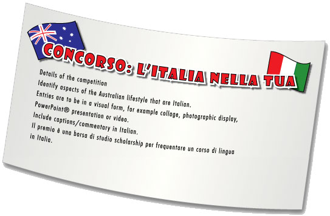

I miei
Attività 7 Gli italiani in Australia
Many Italians have made Australia their home. Some came to Australia many years ago; others are modern-day migrants or are living here on a temporary basis. They have contributed and continue to contribute to the Australian lifestyle and economy in many ways.
Details of the number of Italians in Australia can be found at: http://www.immi.gov.au/media/publications/pdf/people_of_australia.pdf
Vite Italiane explores the history of Italian migrants in Western Australia. You can find information at: www.italianlives.arts.uwa.edu.au.
The Italian influence in the Northbridge area of Perth is very obvious. The Northbridge History Project provides information on its history. Go to: www.northbridgehistory.wa.gov.au to find out more about the Italian influence documented in this project.
At a Northbridge History Studies Day, Dr Susanna Iuliano presented a paper entitled 'Espresso Bar Lifestyles': Italian migrants and café culture in Western Australia.
To locate the paper go to the Northbridge History Project's website or telephone (08) 9222 9305.
This attività gives you the opportunity to discover the trade link between Italy and Australia.
The Italian Chamber of Commerce and Industry in Australia (ICCI)
The ICCI is responsible for creating trade links between Italy and Australia.
To find out more about the ICCI, watch the video Intervista con il Project Manager dell’ICCI. The interview has been divided into two parts.

Refer to InfoPoint – Viewing strategies for some tips to help you with this attività.
Watch Part 1: Il ruolo dell’Italian Chamber of Commerce and Industry in Australia. To help you focus on the information, the interview questions have been included in this worksheet. Jot down notes of what you are able to understand for each question. |
|
Now watch Part 2: Opportunità di lavoro. Jot down relevant information for each question in the same worksheet. |

The interview is a formal situation. The polite (formal) Lei form is used. Per esempio:
Di cosa si occupa Lei?
To find out more about this form of address, refer to Elementi linguistici – Pronomi informali e formali.
To find out more about the ICCI, visit its official website at: http://www.icci.asn.au.
(If you have problems accessing the site, search for the Italian Chamber of Commerce on the web.)
This will help to reinforce the information provided in the interview.
Focus on the following aspects.
What is the role of the ICCI?
It serves the dual purpose of promoting trade links between Western Australia and Italy and caters for the interests of businesspeople both within and outside the local Italian community.How does it help facilitate business and trade?
It provides services which facilitate business transactions, for example feasibility studies, contacts, trade fairs. It encourages trade delegations to visit Western Australia and vice versa.Make a note of the various activities that the ICCI is involved in. Look at the following areas to get you started.
| Eventi | |
|---|---|
| Commercio | |
| Progetti | |
| Esposizioni |
Go to Apply for un’attività that will help you learn more about the Italian business link in Australia.
Concorso: L’Italia nella tua città!
The Italian influence has impacted on the Australian lifestyle in a variety of ways. There are many elements that have become so well integrated that they are now taken for granted.
As part of La festa della Repubblica celebrations a concorso has been launched for students of Italian entitled L’Italia nella tua città!

Prepare an entry for the competition.